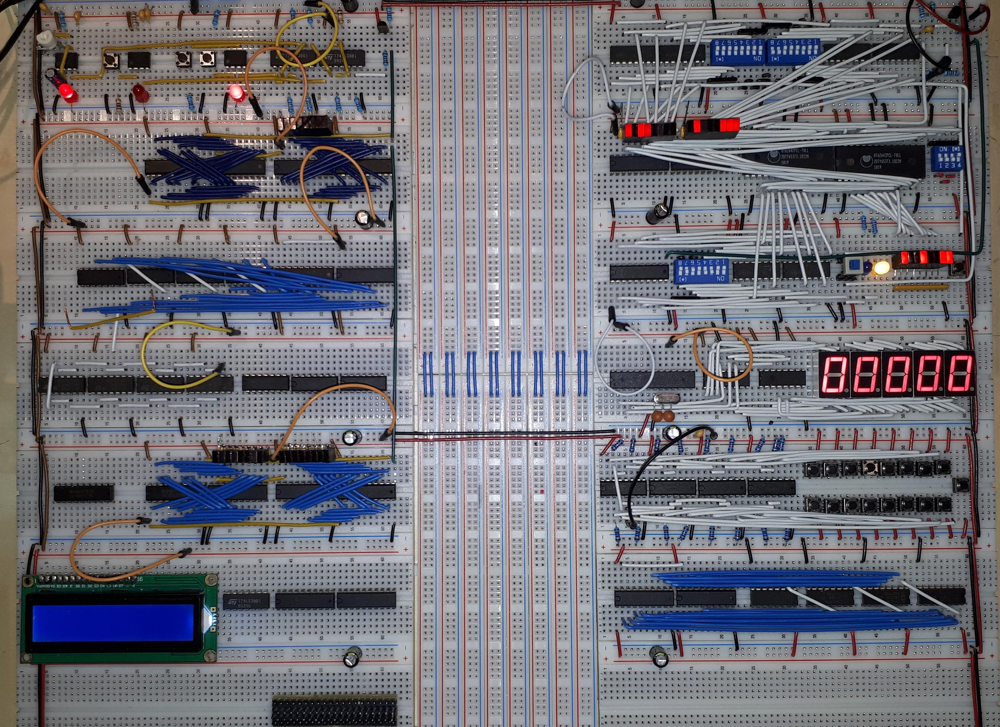
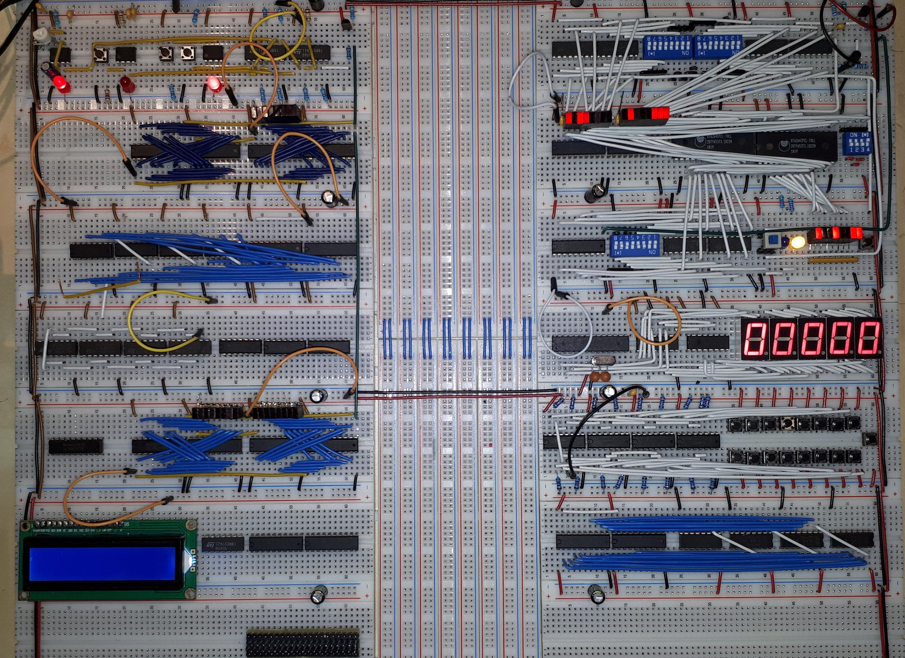
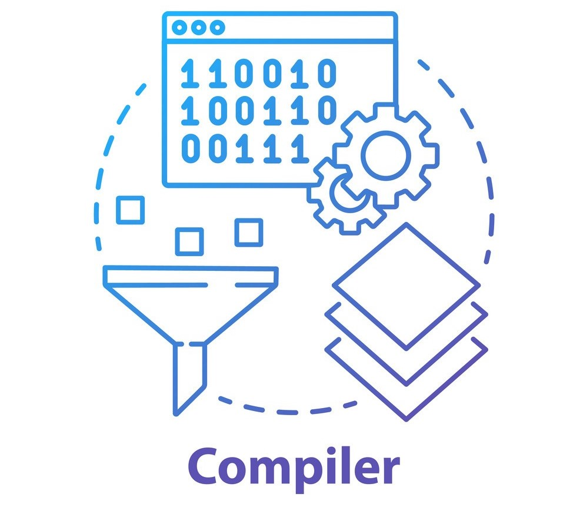
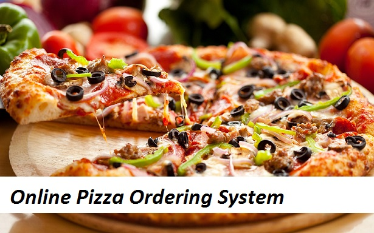

I am a passionate Engineering graduate. Who is hard working, energetic, creative and Honest person.
I have always concentrated on quality work. So that, the amount of time that I have spent on particular project is paid off.
Whatever I do, I give my 100%. So that, I can get the relative experience and knowledge at the same pace.
 

This is a basic hardware for 16-bit computer. It includes a RAM of 32KB, a ROM of 64KB and CPU which consists of an ALU which can perform some basic tasks;
like, bitwise NOT, bitwise OR, bitwise AND, Negate and an Adder.
I started creating it from the Universal gate i.e. NAND Gate, which on further improvements and other logic gates, I was able to create RAM, ROM and ALU.

It is a program which is used to convert intermediate VM codes to assembly code; So that, the generated assembly can run on the 16-bit computer.
It is written in C++ for its high performance and user friendly nature.

It is GUI based python project. After execution, it prompts an interface for users and vendors to handle the pizza requests.
It uses various python libraries for handling GUI(Tkinter), Databases(sqlite3), Warnings(warnings), etc.
It is also a GUI based python project. Similar to Pizza Delivery System, it uses Tkinter, warnings, time, etc. libraries.
It is handles the user command by parsing it into its main components and then searching those components from the pre-defined library.
It is an IPL Organizer program written in C++. It finds various attributes like name of the players in a team, teams playing in the current season, schedule
of matches, man of the match, man of the season and many others in IPL by some pre-defined order.
The program written in C++, schedules the given processes according to multi-level feedback queue, in which, one queue uses fixed priority
preemptive scheduling algorithm while the other one uses Round Robin scheduling with a fixed time quantum of 2 ms.